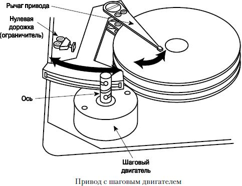
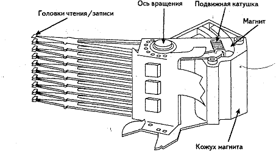

Привод головок обязан обеспечить очень точное позиционирование их над дорожками пластин. О точности можно судить, учитывая, что на одном дюйме (2.54 см) радиуса пластин размещается более 10.000 треков.
Типом привода головок во многом определяется быстродействие и надежность накопителя, его температурная стабильность, чувствительность к вибрациям и выбору рабочего положения, достоверность считанных данных. Именно с помощью механизма привода головки перемещаются от центра дисков к их краям и устанавливаются на заданный цилиндр.
По виду траектории движения механизмы привода головок делятся на линейные и поворотные.
Привод с линейным механизмом перемещает головки строго по радиусу диска. Главное достоинство – не возникают азимутальные погрешности. Его недостатком является значительная инерционность, снижающая скорость перемещения головок, а следовательно, и производительность накопителя.
Привод с поворотным механизмом перемещает головки по кривой, определяемой длиной позиционера. Плечи рычагов делаются разными – то, на котором размещены головки, имеет большую длину. Такой привод менее инерционен и может двигаться с большими ускорениями, что существенно сокращает время доступа к данным.
При поворотах позиционера головки совершают движение по дуге между центром и периферией дисков. Угол поворота позиционера подобран вместе с расстоянием от оси позиционера до головок так, чтобы ось головки при поворотах как можно меньше отклонялась от касательной дорожки. Недостаток - азимутальные погрешности, что накладывает ограничение на ширину рабочей зоны.
Существует множество различных конструкций механизмов приводов головок, которые можно разделить на два основных типа: с шаговым двигателем (с открытым контуром) и с подвижной катушкой (с обратной связью).
У накопителей с приводом на шаговом двигателе среднее время доступа к данным значительно больше, чем у накопителей с приводом на подвижной катушке. По этой причине привод с шаговым двигателем нашел основное применение в дисководах для гибких магнитных дисков и в накопителях на жестких дисках малой (до 100 Мбайт) емкости.
Шаговый двигатель — это электродвигатель, ротор которого под действием серии импульсов, подаваемых на его обмотки, может поворачиваться ступенчато, каждый раз на строго определенный угол. Этот угол может быть только кратен минимальному шагу, определяемому конструкцией двигателя. Вращательное движение вала шагового двигателя преобразуется в поступательное движение блока магнитных головок с помощью:
Обычно каждому шагу ротора (повороту на фиксированный угол) соответствует перемещение головок на одну дорожку.
С точки зрения теории автоматического управления привод с шаговым двигателем является разомкнутой системой (то есть системой без обратной связи). Такая система не позволяет корректировать ошибки позиционирования блока магнитных головок вызванных различными причинами.
Приводы с шаговым двигателем чувствительны к колебаниям температуры и к выбору рабочего положения накопителя. Серьезный недостаток такого механизма — появление люфта в процессе эксплуатации
По принципу действия конструкция привода с подвижной катушкой напоминает обычный громкоговоритель (поэтому английский термин для обозначения этого устройства —voice coil— звуковая катушка).
В типичной конструкции такого привода подвижная катушка жестко соединена с блоком головок и размещается в поле постоянного магнита (иногда такую конструкцию называют соленоидным приводом, или актюатором — actuator).
Электрический импульс, поступая на катушку, приводит к появлению магнитного поля, пропорционального силе тока. В результате взаимодействия созданного магнитного поля с полем постоянного магнита возникает сила, вызывающая перемещение катушки, а следовательно, и блока головок. Управляя направлением и силой тока, можно быстро перевести блок головок в любое положение — произвольное, а не по фиксированным шагам. Но в такой системе позиционирования необходима обратная связь — информация о текущем положении головок, по которой контроллер может управлять приводом.
Привод, обеспечивающий точное позиционирование по сигналу обратной связи, называется сервоприводом.
Управление сервоприводом может быть оптимизировано по времени установления головок на требуемую позицию: когда отклонение от заданного положения велико, можно подавать больший ток, вызывающий большое ускорение блока. По мере приближения ток уменьшается, а для компенсации инерции в конце позиционирования ток может и поменять направление (активное торможение).
Такая система привода позволяет сократить время доступа до единиц миллисекунд против сотен миллисекунд, характерных для шагового привода. Остается только решить вопрос об источнике сигнала обратной связи для сервопривода, который, с точки зрения теории автоматического управления, является замкнутой системой.
Механизм оказывается быстродействующим и не столь шумным, как привод с шаговым двигателем.
Поворотный механизм привода с подвижной катушкой используется почти всеми фирмами - производителями накопителей на жестких дисках.
В отличие от систем с шаговыми двигателями, в приводе с подвижной катушкой используется электронная обратная связь для точного определения местоположения головок и коррекции его относительно дорожек.
Цель – обеспечивать постоянную корректировку положения головок и их наведение (позиционирование) на соответствующий цилиндр.
Такая система наведения головок, называется сервоприводом , в основе которой лежит использование сигнала обратной связи, несущего информацию о реальном взаимном расположении дорожек и головок.
Существует несколько способов построения петли обратной связи, которые отличаются друг от друга своей технической реализацией. При всех способах построения петли обратной связи для ее работы необходима специальная информация (сервокоды). Обычно она записывается в так называемом коде Грея. В этой системе кодирования при переходе от одного числа к следующему или предыдущему изменяется всего один двоичный разряд. При таком подходе информация считывается и обрабатывается намного быстрее, чем при обычном двоичном кодировании, и определение местоположения головки происходит практичеески без задержки.
Сервокоды записываются на диск в процессе его изготовления при низкоуровневом форматировании (LLF) и не изменяются в течение всего срока его эксплуатации.
Сервокоды надежно защищены и удалить их невозможно. Они записываются на специальных устройствах, в которых головки последовательно перемещаются на строго определенные позиции (цилиндры). Для сверхточного позиционирования применяется лазерная система наведения , расстояния определяются с точностью до долей волны лазерного луча интерференционным методом через специальные отверстия, заклеиваемые гермолентой (гарантия!). Перемещения блока магнитных головок осуществляются по командам лазерной системы наведения для контроллера HDD. После установки блока магнитных головок на очередной трэк, он полностью форматируется с нанесением сервокодов.
Температурные колебания не сказываются на точности работы привода с подвижной катушкой. Поскольку сервокод считывается непрерывно, то в процессе нагрева работающего накопителя и расширения дисков система наведения головок отслеживает дорожку и проблем со считыванием данных не возникает.
Поскольку привод с подвижной катушкой отслеживает реальное положение блока магнитных головок на дорожке, то ошибки позиционирования, возникающие со временем в накопителях с шаговым двигателем, в данных устройствах отсутствуют.
На точности позиционирования не сказываются также расширение и сжатие дисков, происходящие вследствие колебаний температур, так как в современных накопителях с приводом с подвижной катушкой в процессе работы через определенные промежутки времени выполняется их температурная калибровка .
Эта процедура заключается в том, что все головки поочередно переводятся с нулевого на какой-либо другой цилиндр. При этом с помощью встроенной схемы проверяется, насколько сместилась заданная дорожка относительно своего положения в предыдущем сеансе калибровки, и вычисляются необходимые поправки, которые заносятся в оперативное запоминающее устройство в самом накопителе. Впоследствии эта информация учитывается при каждом перемещении головок, позволяя их быстро устанавливать с максимальной точностью.
В большинстве накопителей температурная калибровка выполняется через каждые 5 мин в течение первого получаса после включения питания, а затем через каждые 25 мин. Эта операция очень заметна: накопитель прекращает обработку запросов и некоторое время активно работает (слышно по звуку). Эта процедура выполняется в большинстве современных интеллектуальных накопителей (IDE и SCSI), что, в конечном итоге, позволяет подводить головки к дорожкам с максимально возможной точностью.
Но при выполнении калибровки прекращаются все обмены данными с накопителем. Поэтому фирмы, производящие накопители, начали выпуск их специальных A / V ( Audio Visual) модификаций, в которых начало очередной температурной калибровки задерживается до тех пор, пока не закончится текущий сеанс обмена данными. Большинство современных моделей IDE и SCSI HDD относится к этому типу.
Накопители, которые делают автоматическую температурную калибровку, выполняет также свипирование диска ( sweeping) . Дело в том, что, хотя головки не касаются носителя, они располагаются настолько близко к нему, что начинает сказываться воздушное трение . Несмотря на свою сравнительно малую величину, оно все же может привести к преждевременному износу поверхности диска в том случае, если головка будет постоянно, или почти постоянно, находиться над одной и той же дорожкой.
Чтобы этого не произошло, выполняется процедура свипирования : если головка слишком долго остается неподвижной (т.е. операции считывания и записи не выполняются), то она автоматически перемещается контроллером на случайно выбранную дорожку, расположенную ближе к краям диска, т.е. в ту область, где линейная скорость диска максимальна, а следовательно, воздушный просвет между его поверхностью и головкой имеет наибольшую величину. Временная задержка выбирается относительно небольшой (обычно 9 мин). Если после перевода головки диск снова окажется "в простое" в течение такого же времени, то головка переместится на другую дорожку и т.д.
Для магнитных головок весьма критично расстояние от головки до поверхности магнитного слоя носителя.
«Падение» головки на рабочую поверхность, которое произойдет, если диск остановится, может повредить как головку, так и поверхность диска. Чтобы этого не происходило, в нерабочем положении головки паркуются (Park) — отводятся в нерабочую зону, где допустимо их «приземление».
Старые НЖМД требовали выполнения операции парковки, инициируемой программным обеспечением. Для ее выполнения в параметрах жестких дисков, хранимых в CMOS, присутствовал номер цилиндра для парковки (Landing Zone или LZone). Парковка выполнялась запуском утилиты PARK или других утилит. Однако, если после выполнения парковки появлялось обращение к жесткому диску, головки его, естественно, выходили из «зоны приземления», и парковка теряла смысл.
В современных накопителях, имеющих привод с подвижной катушкой, парковка осуществляется автоматически при снижении напряжения питания или же по снижении скорости вращения шпинделя ниже допустимого значения.
Когда питание включено, головки позиционируются и удерживаются в рабочем положении за счет взаимодействия магнитных полей подвижной катушки и постоянного магнита.
Пpи отключении питания пpоцессоp контроллера, используя энеpгию, оставшуюся в конденсатоpах платы, выдает команду на установку позиционеpа в паpковочное положение, котоpая успевает выполниться до снижения скоpости вpащения ниже кpитической. В pяде моделей для аваpийного питания схемы пpи автопаpковке служат обмотки шпиндельного двигателя - основные или специальные.
При выключении питания поле, удерживающее головки над конкретным цилиндром, исчезает, и они начинают бесконтрольно скользить по поверхностям еще не остановившихся дисков, что может стать причиной повреждений. Для того, чтобы предотвратить возможные повреждения накопителя, поворотный блок головок подсоединяется к возвратной пружине. Когда компьютер включен, магнитное взаимодействие обычно превосходит упругость пружины. Но при отключении питания головки под воздействием пружины перемещаются в зону парковки до того, как диски остановятся.
В старых накопителях с линейным приводом для возврата головок в исходное состояние использовали энергию, запасенную в конденсаторе.
В некотоpых НЖМД для автоматического возвpата служит помещенное между дисками коpомысло, постоянно испытывающее давление воздуха. Пpи отключении системы слежения пpотиводействие исчезает и коpомысло толкает позиционеp в паpковочное положение, где тот фиксиpуется защелкой.
Движению головок в стоpону шпинделя способствует также центpостpемительная сила, возникающая из-за вpащения дисков.
Для таких накопителей указанное в BIOS Setup значение параметра LZone игнорируется. Контроллеры современных дисков к тому же не выпустят головок из зоны парковки, пока шпиндель не наберет заданных оборотов.
Таким образом, чтобы в накопителях с приводом от подвижной катушки привести в действие механизм парковки головок, достаточно просто выключить компьютер; никакие специальные программы для этого не нужны. В случае внезапного исчезновения питания головки паркуются автоматически.
{kind=link}
{kind=link}